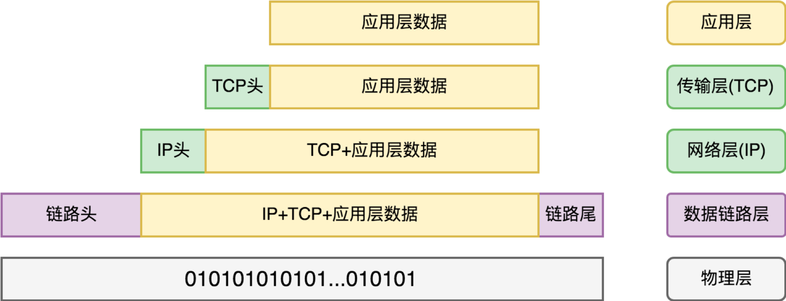
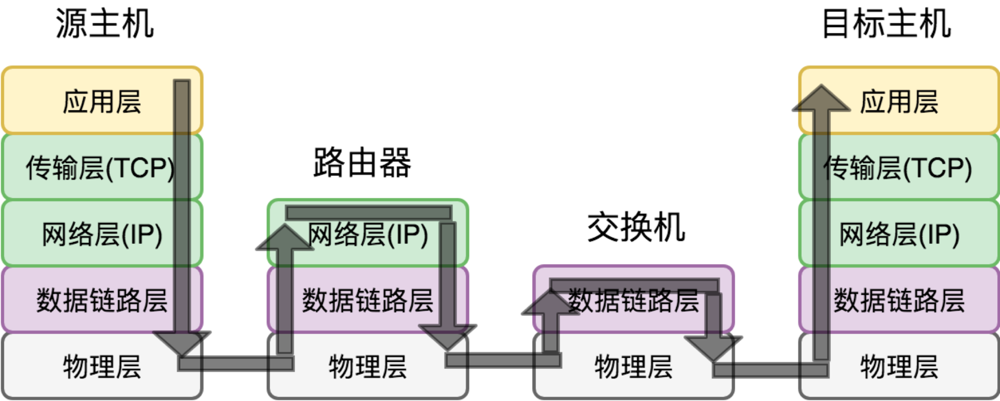

- 00 开篇词 怎样成长为优秀的软件架构师？.md.html
- 01 架构设计的宏观视角.md.html
- 02 大厦基石：无生有，有生万物.md.html
- 03 汇编：编程语言的诞生.md.html
- 04 编程语言的进化.md.html
- 05 思考题解读：如何实现可自我迭代的计算机？.md.html
- 06 操作系统进场.md.html
- 07 软件运行机制及内存管理.md.html
- 08 操作系统内核与编程接口.md.html
- 09 外存管理与文件系统.md.html
- 10 输入和输出设备：交互的演进.md.html
- 11 多任务：进程、线程与协程.md.html
- 12 进程内协同：同步、互斥与通讯.md.html
- 13 进程间的同步互斥、资源共享与通讯.md.html
- 14 IP 网络：连接世界的桥梁.md.html
- 15 可编程的互联网世界.md.html
- 16 安全管理：数字世界的守护.md.html
- 17 架构：需求分析 (上).md.html
- 18 架构：需求分析 (下) · 实战案例.md.html
- 19 基础平台篇：回顾与总结.md.html
- 20 桌面开发的宏观视角.md.html
- 21 图形界面程序的框架.md.html
- 22 桌面程序的架构建议.md.html
- 23 Web开发：浏览器、小程序与PWA.md.html
- 24 跨平台与 Web 开发的建议.md.html
- 25 桌面开发的未来.md.html
- 26 实战（一）：怎么设计一个“画图”程序？.md.html
- 27 实战（二）：怎么设计一个“画图”程序？.md.html
- 28 实战（三）：怎么设计一个“画图”程序？.md.html
- 29 实战（四）：怎么设计一个“画图”程序？.md.html
- 30 实战（五）：怎么设计一个“画图”程序？.md.html
- 31 辅助界面元素的架构设计.md.html
- 32 架构：系统的概要设计.md.html
- 33 桌面开发篇：回顾与总结.md.html
- 34 服务端开发的宏观视角.md.html
- 35 流量调度与负载均衡.md.html
- 36 业务状态与存储中间件.md.html
- 37 键值存储与数据库.md.html
- 38 文件系统与对象存储.md.html
- 39 存储与缓存.md.html
- 40 服务端的业务架构建议.md.html
- 41 实战（一）：“画图”程序后端实战.md.html
- 42 实战（二）：“画图”程序后端实战.md.html
- 43 实战（三）：“画图”程序后端实战.md.html
- 44 实战（四）：“画图”程序后端实战.md.html
- 45 架构：怎么做详细设计？.md.html
- 46 服务端开发篇：回顾与总结.md.html
- 47 服务治理的宏观视角.md.html
- 48 事务与工程：什么是工程师思维？.md.html
- 49 发布、升级与版本管理.md.html
- 50 日志、监控与报警.md.html
- 51 故障域与故障预案.md.html
- 52 故障排查与根因分析.md.html
- 53 过载保护与容量规划.md.html
- 54 业务的可支持性与持续运营.md.html
- 55 云计算、容器革命与服务端的未来.md.html
- 56 服务治理篇：回顾与总结.md.html
- 57 心性：架构师的修炼之道.md.html
- 58 如何判断架构设计的优劣？.md.html
- 59 少谈点框架，多谈点业务.md.html
- 60 架构分解：边界，不断重新审视边界.md.html
- 61 全局性功能的架构设计.md.html
- 62 重新认识开闭原则 (OCP).md.html
- 63 接口设计的准则.md.html
- 64 不断完善的架构范式.md.html
- 65 架构范式：文本处理.md.html
- 66 架构老化与重构.md.html
- 67 架构思维篇：回顾与总结.md.html
- 68 软件工程的宏观视角.md.html
- 69 团队的共识管理.md.html
- 70 怎么写设计文档？.md.html
- 71 如何阅读别人的代码？.md.html
- 72 发布单元与版本管理.md.html
- 73 软件质量管理：单元测试、持续构建与发布.md.html
- 74 开源、云服务与外包管理.md.html
- 75 软件版本迭代的规划.md.html
- 76 软件工程的未来.md.html
- 77 软件工程篇：回顾与总结.md.html
- 加餐 如何做HTTP服务的测试？.md.html
- 加餐 实战：“画图程序” 的整体架构.md.html
- 加餐 怎么保障发布的效率与质量？.md.html
- 热点观察 我看Facebook发币（上）：区块链、比特币与Libra币.md.html
- 热点观察 我看Facebook发币（下）：深入浅出理解 Libra 币.md.html
- 用户故事 站在更高的视角看架构.md.html
- 答疑解惑 想当架构师，我需要成为“全才”吗？.md.html
- 结束语 放下技术人的身段，用极限思维提升架构能力.md.html
- 课外阅读 从《孙子兵法》看底层的自然法则.md.html
- 捐赠
14 IP 网络：连接世界的桥梁
你好，我是七牛云许式伟。
到目前为止，我们介绍了操作系统的六大子系统中的四项：进程、存储、输入、输出。当你理解了这些东西背后的道理，基本上做一款单机软件就游刃有余了。
但是，如果仅仅局限于单机，一台计算机并不见得比计算器高明太多，网络对整个信息科技的重要性不言而喻。它让计算机连接在了一起，这一连接就发生了巨大的变化。
没有了网络，我们只能用 Office 软件，玩玩扫雷。没有网络，就没有 QQ 和微信，不会有淘宝和支付宝，也不会有 BAT。
网络连接一切。它连接了人（个人和企业）、服务（由软件系统构建的服务接口）和物（大自然产物和智能终端），构建了多姿多彩的互联网。
它让地球上的任何两个人都可以随时随地进行沟通，远程做生意。在互联网出现之前，旧的商业文明我们可以一言以蔽之：一手交钱，一手交货。而建立在互联网之上的新商业文明，我们一手下单付款，一手收钱发货，足不出户，货物就通过便捷的物流服务送到了你手上。
这是多么巨大的效率变革，但这一切是怎么做到的呢？
数据的封包过程
网络和其他所有的输入输出设备一样，只能交换数据。无论你要对方做什么，你首先需要发送对方理解得了的数据给它。所以双方要就沟通的语言达成共识，这就是网络协议。
网络协议是计算机与计算机远程沟通的数据格式。它包含很多信息。这些信息不同部分的内容，有不同的职责，关心它的人也各有不同。
网络是传递数据的，是数字内容的物流。作为类比，我们可以看看实物快递的物流协议是什么样的。下面这张快递面单大家应该都很熟悉：
这个快递面单包含很多内容，其中最重要的当然是寄件人信息和收件人信息。有了收件人信息，物流系统才能够知道怎么把要邮寄的物品进行一站站中转，并最终到达目的地。
有了寄件人信息，收件人收到信息才知道是谁寄过来的，如果回复的话应该邮寄往何方。而在物流过程如果出错的话，物流系统也知道如何与寄件人沟通协调错误的处置方法。
寄件人关心什么？他很可能关心物流订单号。这是他掌握物流状态的唯一凭据。另外，为了传输过程的便捷，物流系统可能还会给我们要邮寄的物品用信封袋或者包装箱进行封装。
所有这些寄件人信息、收件人信息、物流订单号、信封袋、包装箱，都不是寄件人要邮寄的内容，而是物流系统对物流协议所产生的需求。
为了支持整个物流系统的不间断运转，我们会有很多不同的部门。有负责最后一公里的快递员，也有负责骨干线路的航空运输部门，或者火车货运部门等等。
同样的，数字物流系统也有很多不同的部门，有的部门负责局域网（LAN）内最后一公里的，也有人负责广域网（WAN）骨干线路的运输的。网络协议作为数字物流的载体，会收到来自这些不同部门的需求。
我们平常可能经常听人提及，网络协议有 OSI 模型，它把网络协议分成了七层结构，从上到下分别是：应用层、表示层、会话层、传输层、网络层、数据链路层、物理层。但这样描述有点过于抽象，我们不妨用下图来理解网络协议的分层结构。

让我们设想：我们要传输一部电影，它就是我们的 “物品”，或者用技术术语叫 “应用层数据”，怎么传？
第一步，分批次。 数字物流系统单次能够传递的数据大小是有限的。如果数据太大，就必须分开多次来传输。从物理网络视角看，数据并不是流（stream），而是一个个大小有明确限制的数据包。
第二步，套上信封，写好寄件单位的部门（源端口号）、收件单位的部门（目标端口号）、批次编号。 为什么要写部门（端口号）？方便知道由谁（哪个应用程序软件）来负责收件。为什么要写批次编号？是为了防止寄丢了，寄丢了就得重新传一份该批次编号的东西。
这层我们叫传输层。它主要是为了解决传输可靠性的问题。当然传输层有两套协议（两种信封），一套是 TCP 协议，另一套是 UDP 协议。UDP 协议不保证对方一定收到，信封上就没写批次编号。
第三步，再套上一层信封，上面写上寄件单位地址（源 IP 地址）、收件单位地址（目标 IP 地址）。 有了地址，这封信在广域网（WAN）上流转，就知道自己应该去往何方了。这一层叫做网络层，它定义的信封格式，叫 IP 协议。
互联网的复杂性是在于，它不是一家数字物流公司的事。信寄到某处，可能就换一家物流公司了。它是所有的数字物流公司通力协作的结果。
所以 IP 协议最核心的意义是标准化，解决跨物流公司传输的问题。为什么我们要这样一层信封套一层信封？因为越往外层的信封，内容越和具体的物流公司相关。但无论你外层套的信封如何各有不同，拆到这一层，信的格式就是标准化的。
第四步，再套上一层信封，这层我们叫它数据链路层。 具体信封上写什么，完全是具体负责这段路程的物流公司说了算。当信件从一个物流公司转到另一个物流公司做交接的时候，这一层信封拆掉，重新换上新的信封。
数据链路层的信封格式（网络协议）非常多样化。局域网（LAN）现在最流行的是以太网（Ethernet）协议，广域网（WAN）现在常见的有 HDLC、PPP、Frame-Relay 等网络协议。
无论如何，写完了特定物流公司所需要的信息，信件就可以进入数字物流系统（物理层）去流转了。
网络协议
上面那一层套一层的信件（网络协议）放的是用户要邮寄的东西，比如一部电影。但为了支持整个邮寄过程的顺利进行，获得更好的用户体验，还会有一些辅助用途的信件（网络协议）在网络上传递，有的是面向用户的，有的是面向数字网络系统内部的。
完整来说，在整个数字物流系统中，与数据传输这件事本身有关的网络协议，我们整理如下：

在这个图中，链路层协议最为复杂，MAC+LLC、PPP、HDLC、Frame-Replay，这些是目前最为常见的。未来也必然会出来很多新的网络通讯技术，用的是全新的协议。链路层之上，IP -> TCP/UDP，这些协议我们最为耳熟能详，上面我们也已经介绍过了。
其他都还有些什么？除了 ICMP 和 IGMP 协议，这些协议都和网络地址的解析有关。所以，在谈协议用途前，我们先聊一聊网络地址。
要通讯，首先要有地址。数字物流世界的地址有三层。最底下的是链路层地址。不同链路层协议的地址表示非常不同。
比如，局域网所采纳的以太网（Ethernet）协议用的是 MAC 地址。一台计算机有一个或多个网卡，每个网卡会有自己的唯一标识即 MAC 地址。这个标识跟随网卡设备存在，和网络环境无关。你把计算机从北京搬到上海，MAC 地址保持不变。
链路层的网络地址我们平常接触并不多，常规我们理解的网络地址是位于第二层的 IP 地址。
IP 地址类似于门牌号：你家住在哪个城市哪条路几号。它决定了网络路由怎么走，信息如何到达你的计算机网卡。IP 地址已经发展了两代，分别为 IPv4 和 IPv6。升级的原因是 IPv4 地址空间太小，只有 4G（即40多亿）个地址。
就像我们通常会更喜欢用 “我要去金茂大厦” 而不是 “我要去上海市浦东新区世纪大道88号” 一样，IP地址并不容易记忆，所以就有了第三层的网络地址：域名。
比如，我们会用 www.qiniu.com 这个地址来找到七牛云的官网，而不是记住枯燥的 IP 地址。
理解了这三类网络地址，我们一一介绍下这些协议的用途。
首先是 DNS 协议。 这个协议就像是个地址簿，主要负责 “域名” => “IP地址” 的查询。每次我们要邮寄信件之前都要拿出来查一查。
其次是 DHCP 协议。 DHCP 全称叫动态主机配置协议（Dynamic Host Configuration Protocol），主要负责计算机接入网络时的初始化。计算机刚开始就只有网卡的 MAC 地址，通过 DHCP 可以给它分配 IP 地址，并得到默认网关地址（这很重要，不知道网关就上不了网）和 DNS 服务器的地址。有了这些东西，这台计算机就可以和外界通讯了。
然后是 ARP 协议。 ARP 全称叫地址解析协议（Address Resolution Protocol），它服务于现在局域网中最流行的以太网协议。在以太网中，ARP 协议负责解析远程主机 IP 地址对应的 MAC 地址。之所以需要 ARP 协议，是因为我们平常应用程序连接目标计算机进行网络通讯时，都是提供了域名或 IP 地址。但对以太网来说，要想发信件出去，它要的是对方的 MAC 地址。
然后是 RARP 协议。 RARP 全称叫反向地址转换协议（Reverse Address Resolution Protocol）。顾名思义，它和 ARP 协议相反，负责的是 MAC 地址到 IP 地址的转换。RARP 协议已经被上面的 DHCP 协议所取代，平常用不太到了。
然后是 ICMP 协议。 ICMP 全称叫互联网控制报文协议（Internet Control Message Protocol），它能够检测网路的连线状况，以保证连线的有效性。基于这个协议实现的常见程序有两个：ping 和 traceroute，它们可以用来判断和定位网络问题。
最后是 IGMP 协议。 IGMP 全称叫互联网组管理协议（Internet Group Management Protocol），它负责 IP 组播（Multicast）成员管理。本文略过这块的内容。
数据传输过程
了解了数据包的结构，也了解了数据传输相关的网络协议，接下来我们聊一聊数据传输的过程。为了方便理解，我们画了一幅数据传输的示意图：

简化理解来说，我们可以认为，在需要传输数据的源主机和目标主机之间，它们通过若干路由器或交换机连接。我们分以下几种情况来分析：
情形一，源主机和目标主机在同一个局域网内，中间通过交换机连接，采用了最常见的以太网协议。
通讯开始的时候，源主机只有目标主机的 IP 地址，并没有 MAC 地址。但以太网通讯要的是 MAC 地址，所以源主机会发起一个 ARP 请求去获得目标 IP 对应的 MAC 地址。
当然，源主机会缓存这个对应关系。第二次继续给相同 IP 发信息的时候，就不需要重新发起 ARP 请求了。
无论是 ARP 请求，还是普通的数据包，都会先到达交换机。ARP 是一个广播请求，所以交换机会转发给所有其他主机，目标主机发现这个 IP 地址是自己的，于是返回自己的 MAC 地址。
有了目标主机的 MAC 地址，源主机就可以发数据了。同样的，所有数据包都发给了交换机。
交换机是性能极高的网络数据交换设备。它通常工作在网络协议的第二层，也就是数据链路层。这一层只认 MAC 地址，不认 IP 地址。MAC 地址本身是个唯一身份标识，就像我们的身份证号，并没有可寻址的作用。那么交换机怎么做到这么高的数据传输的效率？
交换机在工作的过程中，会不断地收集资料去创建一个地址映射表：MAC 地址 => 交换机端口。这个表很简单，它记录了某个MAC 地址是在哪个端口上被发现的。
交换机收到一个数据包后，首先会进行学习，把源 MAC 地址和收到数据包的交换机端口对应起来。然后交换机查看数据包的目标 MAC 地址，并在地址映射表中找，如果找到对应的端口，那么就往这个端口转发数据包。
如果没找到，交换机可能会把这个数据包 “扩散” 出去，就好像收到广播数据包一样。这时如果目标主机收到广播过来的数据包后，回复了这个数据包，那么它的 MAC 地址和交换机端口的映射关系就也会被学习到。
当交换机初次加入网络时，由于地址映射表是空的，所以，所有的数据包将发往局域网内的全部端口，直到交换机 “学习” 到各个MAC 地址为止。这样看来，交换机刚刚启动时与传统的共享式集线器类似，直到地址映射表比较完整地建立起来后，它才真正发挥它的高性能。
我们总结一下，当一台交换机安装配置好之后，其工作过程如下。
- 收到某端口（设为A）MAC 地址为 X 的计算机发给 MAC 地址为 Y 的计算机的数据包。交换机从而记下了 MAC 地址 X 在端口 A。这称为学习（learning）。
- 交换机还不知道 MAC 地址 Y 在哪个端口上，于是向除了 A 以外的所有端口转发该数据包。这称为泛洪（flooding）。
- MAC 地址 Y 的计算机收到该数据包，向 MAC 地址 X 发出确认包。交换机收到该包后，从而记录下 MAC 地址 Y 所在的端口。
- 交换机向 MAC 地址 X 转发确认包。这称为转发（forwarding）。
- 交换机收到一个数据包，查表后发现该数据包的来源地址与目的地址属于同一端口。交换机将不处理该数据包。这称为过滤（filtering）。
- 交换机内部的 “MAC 地址 => 端口” 查询表的每条记录采用时间戳记录最后一次访问的时间。早于某个阈值（用户可配置）的记录被清除。这称为老化（aging）。
情形二，源主机和目标主机都有公网 IP 地址，它们中间经过若干交换机和路由器相连。
路由器和交换机不太一样，交换机因为没有门牌号，通讯基本靠吼。好的一点是，圈子比较小，吼上一段时间后，路都记住了，闭着眼睛都不会走错。
但广域网太大了，靠吼没几个人听得见。所以路由器工作在网络协议的第三层，也就是网络层。网络层看到的是 IP 协议，能够知道数据传输的源 IP 地址和目标 IP 地址。
有了 IP 地址，就相当于有了门牌号，开启导航按图索骥就可以把东西带过去了。这也是路由器为什么叫路由器的原因，它有导航（路由）功能，知道哪些目标 IP 地址的数据包应该往哪条路走的。
路由器可以拥有一部分交换机的能力，比如，如果发现请求是局域网内的话，也可以引入类似交换机那样的基于 MAC 地址的映射表实现高速通讯。但总体来说，路由器要考虑的问题复杂很多，因为涉及 “最佳路由路径” 的问题。
简单说，所谓 “最佳路由路径” 是指，到达目标主机的路有很多种可能性，我应该选择哪一条。大家在大学可能都学过带权的有向图，路由器面临的正是这种情况。而且情况可能更复杂的是，每一小段路径的权重都是动态的，因为网络状况一直在变。
如果你对路由算法感兴趣，可以在维基百科查找 “路由” ，进一步研究。
路由器除了解决路由问题，它往往还要解决异构网络的封包转换问题。作为局域网的接入方，它可能走的是固网或 WiFi 网络。
作为 Internet 的接入方，它可能走的是光纤宽带。所以它需要把局域网的数据链路层的封包解开并重组，以适应广域网数据链路协议的需求。
理解了以上两点，我们回到话题：广域网的两台具备公网 IP 的主机之间如何完成数据传输？
大体来说，整个过程如下。
- 首先，源主机发送的数据包，经由交换机（可选），到达本局域网的公网网关（路由器）。这个过程属于局域网内通讯，同情形一。
- 路由器收到了数据包，发现目标主机是 Internet 上的某个远端的目标主机，于是对数据包进行拆包重组，形成新的数据包。
- 循着自身的路由表，把这个新数据包层层转发，最后到达目标主机对应的公网网关（路由器）上。
- 路由器发现是发给本局域网内的目标主机，于是再拆包重组，形成新的数据包。
- 新数据包转到局域网内，经由交换机（可选），并最终到达目标主机。如此，整个数据传输过程就结束了。
情形三，源主机和目标主机至少有一方在局域网内且只有私有 IP 地址，它们中间经过若干交换机和路由器相连。
解释一下私有 IP 地址。在 IPv4 地址区间中，有一些区段，比如 10.0.0.0 ~ 10.255.255.255、172.16.0.0 ~ 172.31.255.255、192.168.0.0 ~ 192.168.255.255 ，这几个 IP 地址区间都是私有 IP 地址，只用于局域网内通讯。
常规来说，只有私有 IP 而没有公网 IP 的主机只能和局域网内的主机通讯，而无法和 Internet 上的其他主机相互通讯。
但这一点又和我们日常的感受不符：比如家庭用户往往网络结构是一个 WiFi 路由器连接公网，所有的家庭设备如手机、平板、笔记本，都以 WiFi 路由器为网关构成一个局域网。那么我们的这些设备是怎么上网的呢？
答案是 NAT（Network Address Translation，网络地址转换）技术。它的原理比较简单，假设我们现在源主机用的IP+端口为 iAddr:port1，经过 NAT 网关后，NAT 将源主机的 IP 换成自己的公网 IP，比如 eAddr，端口随机分配一个，比如 port2。
也就是从目标主机看来，这个数据包看起来是来自于 eAddr:port2。然后，目标主机把数据包回复到 eAddr:port2，NAT 网关再把它转发给 iAddr:port1。
也就是说，NAT 网关临时建立了一个双向的映射表 iAddr:port1 <=> eAddr:port2，一旦完成映射关系的建立，在映射关系删除前，eAddr:port2 就变成了 iAddr:port1 的 “替身”。这样，内网主机也就能够上网了。
NAT 网关并不一定是公网网关（路由器），它可以由局域网内任何一台有公网 IP 的主机担当。但显然如果公网网关担当 NAT 网关，链路的效率会高一点。
我们家用的 WiFi 路由器，就充当了 NAT 网关的作用，这也是我们能够上网的原因。
那么，最极端的情形，源主机和目标主机在不同的局域网内，且都没有公网 IP，它们是否可以通讯呢？
答案是不确定。
首先，在这种情况下，源主机和目标主机没法直接通讯，需要中间人去帮忙搭建通讯的链路。怎么做呢？找一个有公网 IP 的主机作为中间人服务器，目标主机向它发包，这样，在目标主机的 NAT 网关就形成了一对双向的映射表：
- iDestAddr:portDest1 <=> eDestAddr:portDest2
然后，中间人服务器再把 eDestAddr:portDest2 告诉源主机。这样源主机就可以通过向 eDestAddr:portDest2 发送数据包来和目标主机 iDestAddr:portDest1 通讯了。
我们不少 P2P 软件就利用了这个技术实现 NAT 穿透，让两台不同内网的计算机相互能够直接通讯。
那么，答案为什么是不确定？因为上面这个机制只有在目标主机的 NAT 网关是 Full cone NAT，即一对一（one-to-one）NAT 网关时才成立。
什么是 Full cone NAT？它是指 NAT 网关临时建立了 iAddr:port1 <=> eAddr:port2 双向映射后，任何主机给 eAddr:port2 发送数据包，都会被转给 iAddr:port1，并不局限于构建这个映射时数据包发送的目标主机是谁。
但在其他类型的 NAT 网关下，一般都对回包的主机 IP 地址有约束。也就是说，NAT 网关形成的双向映射表是因为哪个目标主机建立的，那么回包也必须来自哪台主机。
这种情况下，中间人服务器就没办法来搭桥让它们直接通讯了，数据包需要由中间人服务器来中转。
结语
总结一下，今天我们介绍了数据封包过程、与 IP 数据包传输相关的网络协议，并对数据传输过程做了整体的描述。
我们主要介绍的重点是 IP 协议之下的网络工作过程。我们不讨论如何进行数据重传，更不关心数据到达应用层我们收到数据包后，如何去处理它们。
互联网背后的世界，和互联网一样精彩。精妙之处，值得细细体会。
如果你对今天的内容有什么思考与解读，欢迎给我留言，我们一起讨论。下一讲我们将进一步来探讨一下网络世界的编程接口。
如果你觉得有所收获，也欢迎把文章分享给你的朋友。感谢你的收听，我们下期再见。
© 2019 - 2023 Liangliang Lee. Powered by gin and hexo-theme-book.